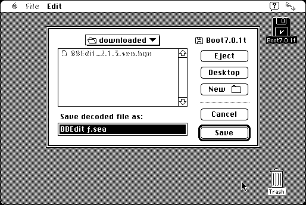

Download
Decode_AppleFile_1.1.zip (29K) Decode Apple File 1.1 repackaged into a zipped hfs disk image and checksum file. The disk image can be mounted with Mini vMac.
Decode_AppleFile_1.1.hqx (49K) Decode Apple File 1.1 in the original format.
copyright: Baylor University
mod date: Jun 2, 1998
license: free for non-commercial use
from url :
Stuff I've Written
“Utility that decodes AppleSingle, Apple Double, and BinHex files.” By Carl W. Bell. Requires System 7.

If you find these downloads useful, please consider helping the Gryphel Project, which hosts them.
Here are the md5 checksums for the downloads, signed with Gryphel Key 5:
--------- GRY SIGNED TEXT --------- f7c3c4ec0e0054db8902e585af832804 Decode_AppleFile_1.1.zip 985ff7a67b3e8acc385e3ac4936d1d53 Decode_AppleFile_1.1.hqx ------- BEGIN GRY SIGNATURE ------- Gry/4Xa8CFcUzxdN/HxPOxvVFs2hhqs1JJu4a3N0QN9ZnXa2BBcOd5ktWggFxkYf bibnPlMotToxGTdf63l66A/bn0XTl3eCdZlcL2RJTV6a3Q8IzrWrlyDceJd2neCI bMUJoLWQ3kzIOonZPN0UBsAHK44U4fi0vId0ZjEwKEebR51b5i0D+J87U9E3RmZm -------- END GRY SIGNATURE --------